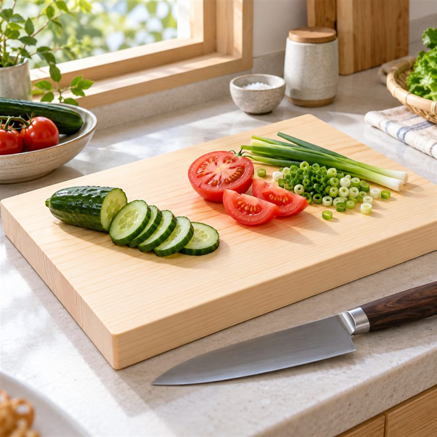

キッチン雑貨
国産ひのき まな板（架空ブランド：木と暮らす）
楽天 商品名63字（上限127字）
まな板 ひのき 国産 木製 36×21cm 厚さ3cm 一枚板 軽い 刃あたりがやさしい 日本製 キッチン 木のまな板 ギフト
Amazon 商品名57字（上限75字）
木と暮らす ひのき まな板 国産 一枚板 36×21×3cm 約700g 刃あたりがやさしい木製カッティングボード
キャッチコピー
トントンと、やわらかい音。
毎日の下ごしらえが、少し楽しみになるまな板。
Amazon 商品の仕様 5点
- 【刃あたりがやさしい】ひのきはやわらかく弾力のある木材のため、包丁の刃が当たったときの衝撃をやわらげ、刃こぼれしにくい使い心地です。
- 【約700gで扱いやすい】36×21×厚さ3cmの一枚板。片手で持ち上げて洗い場へ運べる重さです。
- 【ひのきの香り】使い始めは、ひのき特有のすっきりとした香りがします（香りは使用とともに穏やかになります）。
- 【国産ひのきの一枚板】国内で育ったひのきを、継ぎ目のない一枚板に仕上げています。
- 【お手入れ】使用前に水で濡らし、使用後は中性洗剤で洗って立てかけて乾かしてください。食器洗い乾燥機・漂白剤はご使用いただけません。
使うシーン
朝パンやフルーツを切って、そのまま食卓へ。
夕方野菜を刻む音が心地よい、平日の下ごしらえ。
週末チーズや生ハムをのせて、おもてなしプレートに。
正直にお伝えしたいこと
木のまな板には、包丁の跡や色の変化がつきます。使い込むほどに味わいが出る素材です。黒ずみを防ぐため、使用後はしっかり乾かしてください。生肉・生魚を切ったあとは、すぐに洗うことをおすすめします。
商品仕様
| サイズ | 約 幅36 × 奥行21 × 厚さ3cm |
|---|---|
| 重さ | 約700g（木材のため個体差があります） |
| 材質 | ひのき（国産） |
| 表面仕上げ | 無塗装 |
| 原産国 | 日本 |
| ご注意 | 食器洗い乾燥機・電子レンジ・漂白剤は使用不可 |
よくある質問
Q. 反ったりしませんか？直射日光や乾燥機で急に乾かすと反りの原因になります。風通しのよい場所で立てて乾かしてください。
Q. においが移りませんか？使う前に水で全体を濡らしておくと、食材のにおいや色が移りにくくなります。